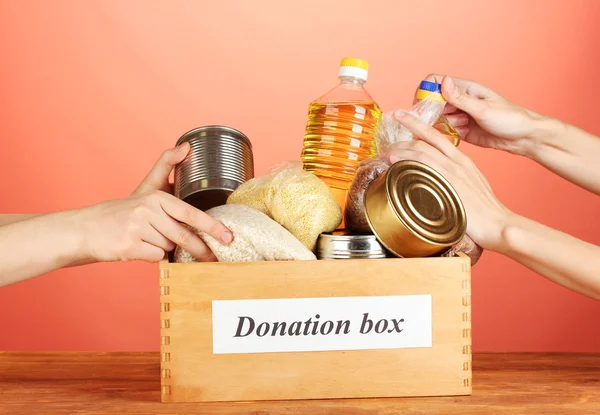

Como Ajudar: Diversas Formas de Fazer a Diferença
Sua contribuição, por menor que seja, pode impactar positivamente vidas e ajudar a construir uma sociedade mais justa e solidária.

Ajudar ao próximo é um gesto poderoso que pode transformar vidas e impactar positivamente a sociedade. Existem diversas maneiras de se envolver e oferecer seu apoio, e cada ação, por menor que seja, tem um grande valor. A chave é começar e escolher a forma que mais se adapta às suas possibilidades e desejos de contribuir.
Uma das formas mais diretas de fazer a diferença é por meio de doações financeiras. Contribuir com dinheiro para organizações que atuam em causas sociais, como saúde, educação, combate à fome ou defesa dos direitos humanos, ajuda a garantir que esses projetos continuem a existir e prosperar. Muitas vezes, a ajuda financeira é o que permite a essas entidades manterem seus programas e ampliarem seu alcance, beneficiando ainda mais pessoas.
Além das doações financeiras, outra maneira eficaz de ajudar é por meio da doação de alimentos e itens básicos. Muitas famílias enfrentam a escassez de alimentos e recursos essenciais, e sua contribuição pode proporcionar alívio imediato. Ao doar alimentos não perecíveis, como arroz, feijão, macarrão, leite e óleos, você oferece uma oportunidade para que mais pessoas tenham acesso ao básico necessário para sua sobrevivência e dignidade. Doar roupas usadas, em bom estado, também é uma excelente forma de contribuir, especialmente para aqueles que não possuem condições de comprar roupas novas. Essas doações podem ser direcionadas para organizações que atuam diretamente em comunidades carentes, garantindo que o impacto de sua ajuda seja imediato e direto.
Outra maneira de contribuir é por meio do voluntariado. Muitas organizações sociais dependem da ajuda de pessoas dispostas a oferecer seu tempo e habilidades para apoiar causas importantes. O voluntariado é uma das formas mais poderosas de ajudar, pois você não só contribui com recursos materiais, mas também dedica seu tempo e esforço para fazer a diferença na vida de outras pessoas. Seja ajudando em abrigos, projetos de educação, apoio a idosos, ou até mesmo participando de ações de preservação ambiental, sua contribuição pode ter um impacto duradouro, criando um ciclo de solidariedade e apoio mútuo.
Além disso, doar sangue e medula óssea são ações simples, mas de extrema importância. A doação de sangue é fundamental para a realização de tratamentos médicos e cirurgias em hospitais, e muitas vezes é a única forma de salvar vidas. Já a doação de medula óssea pode ser a chance de sobrevivência para pacientes que sofrem de doenças graves, como leucemia. Se você está em boa saúde, considere essas opções como uma maneira de salvar vidas e proporcionar a outros uma nova chance de viver.
O importante é entender que qualquer ajuda, por menor que pareça, tem um grande valor. Não é necessário esperar para fazer a diferença – cada pequeno gesto conta. Se você se sente motivado a ajudar, a sua contribuição pode ser o primeiro passo para transformar a vida de alguém e construir um mundo mais justo, solidário e humano. A generosidade de cada indivíduo é o que torna possível o alcance de grandes mudanças sociais. Por isso, não espere mais – comece agora a fazer a diferença, seja por meio de uma doação, um gesto de voluntariado, ou um simples ato de bondade. Juntos, podemos criar um futuro melhor para todos.